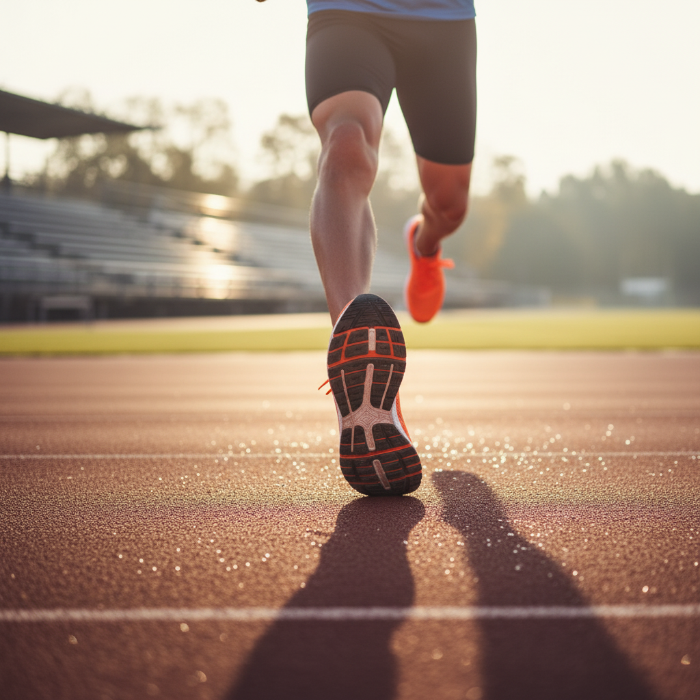
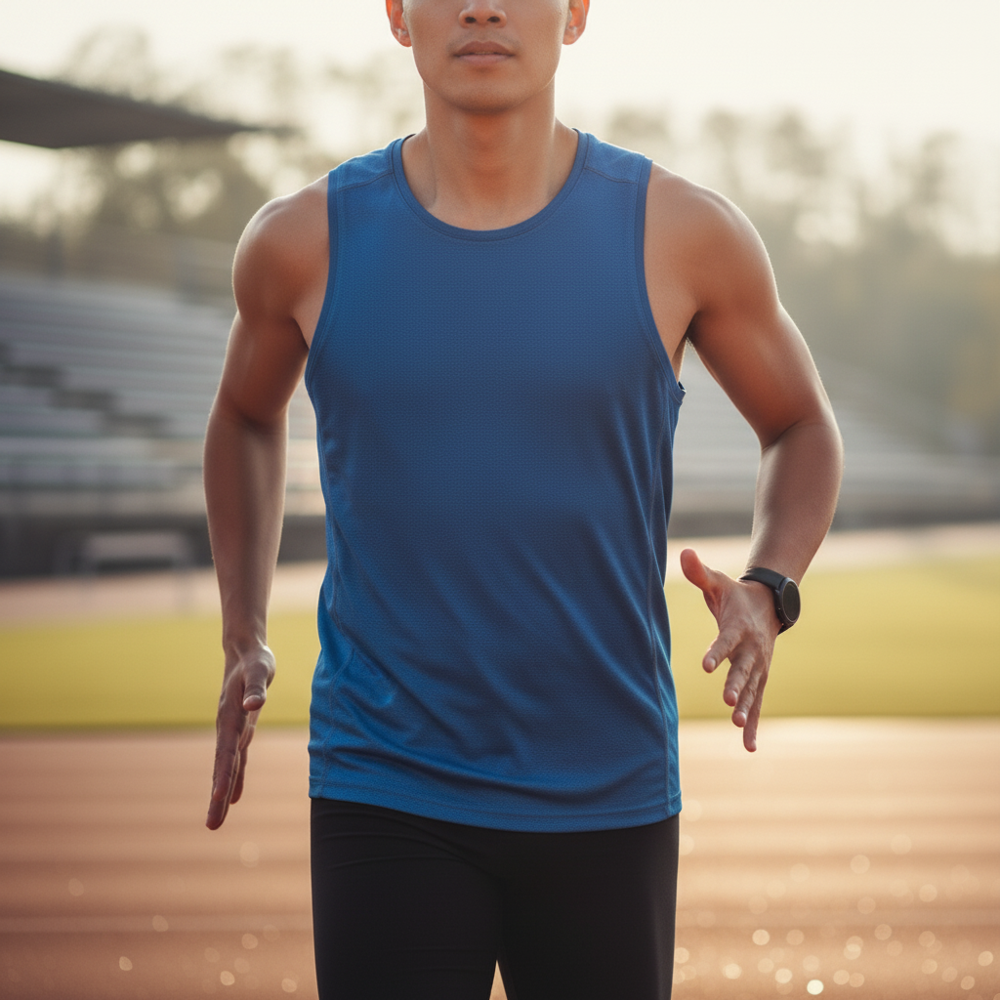

Learn to improve your running efficiency, reduce impact, and increase speed by adopting the biomechanical principles of a cat. This tutorial focuses on posture, foot strike, and relaxed power to make your running feel more natural and fluid.
⏱️ Estimated time: 5 minutes
Cats run with their center of gravity slightly forward, allowing them to fall into each step. To mimic this, stand tall and lean forward from your ankles, not your waist. Maintain a straight line from your head, through your hips, to your heels. You should feel like you're about to fall forward, forcing you to take a step to catch yourself. This is your new running posture.
⏱️ Estimated time: 10 minutes
Cats land silently and lightly on the pads of their paws. Your goal is to land on your mid-foot, directly underneath your body's center of mass (your hips). Avoid 'reaching' with your foot and landing heavily on your heel far in front of you. Practice jogging in place, focusing on landing on the ball of your foot, then let that motion carry you forward.
⏱️ Estimated time: 15 minutes
A cat's power comes from a rapid leg turnover. Focus on taking more steps per minute (cadence), rather than longer strides. Aim for a cadence of around 170-180 steps per minute. Use a quick, powerful but not exaggerated knee drive to propel yourself forward, imagining you're pushing the ground away behind you like a cat pouncing.
⏱️ Estimated time: 5 minutes (practice throughout the run)
Watch a cat run; its upper body is fluid and relaxed, channeling all energy into forward motion. Keep your shoulders down and loose, away from your ears. Let your arms swing forward and back from the shoulder, not side-to-side across your body. Keep your hands unclenched, as if you're lightly holding a potato chip without breaking it.
⏱️ Estimated time: 10 minutes
Now, combine all the elements. Start with a slow jog, focusing on form. Then, perform short sprints (50-100 meters) where you concentrate on executing all the techniques together: the forward lean, the light mid-foot strike, the quick cadence, and the relaxed upper body. Focus on the feeling of effortless, powerful, and fluid motion, like a cat in full chase.